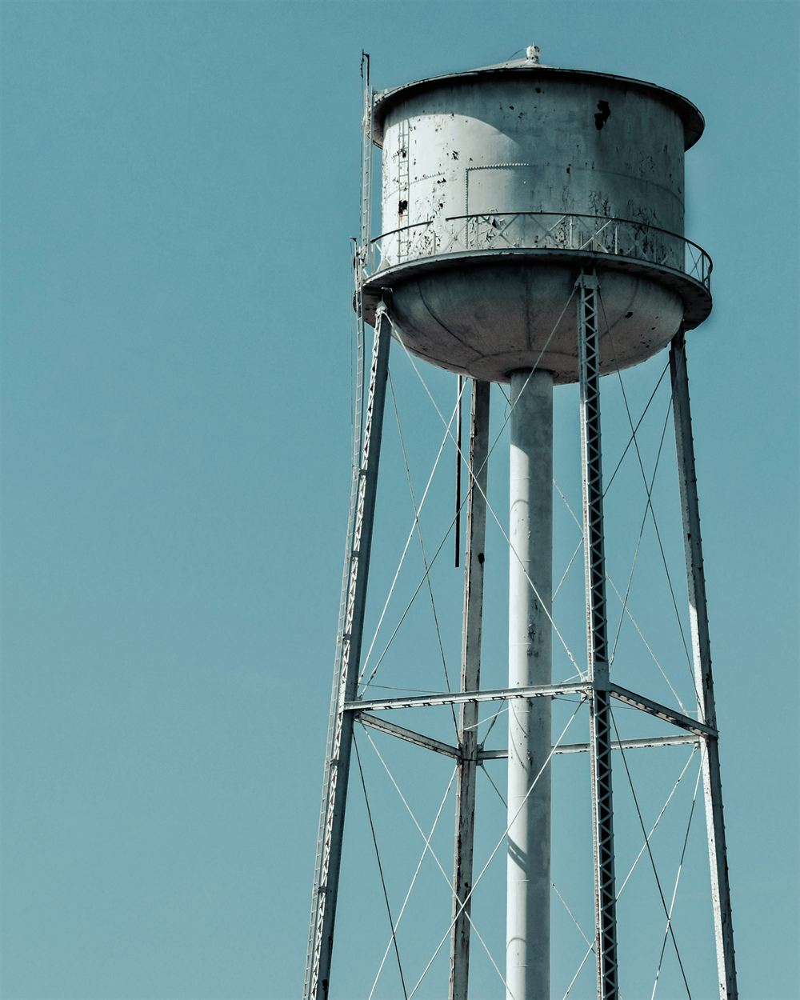
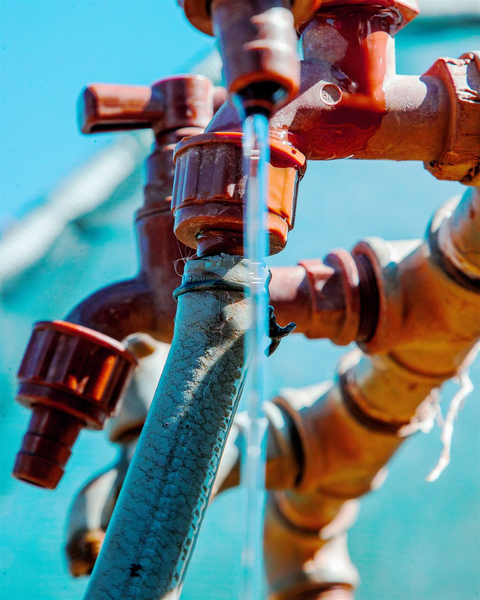
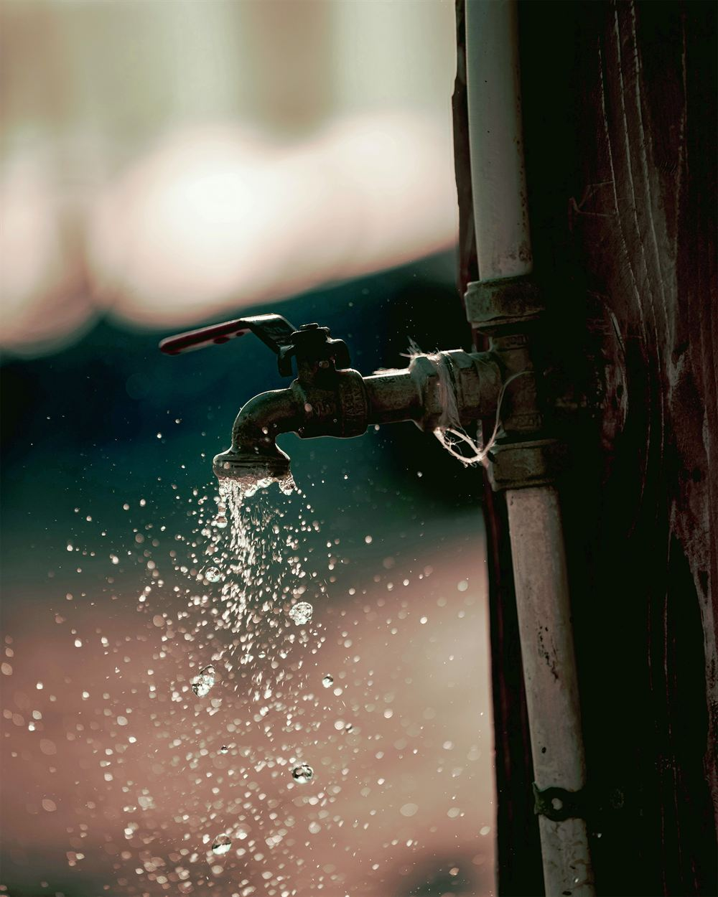
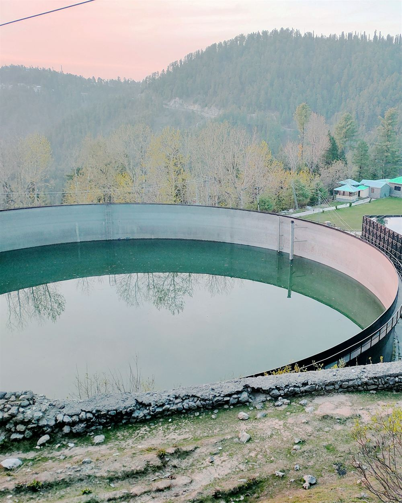
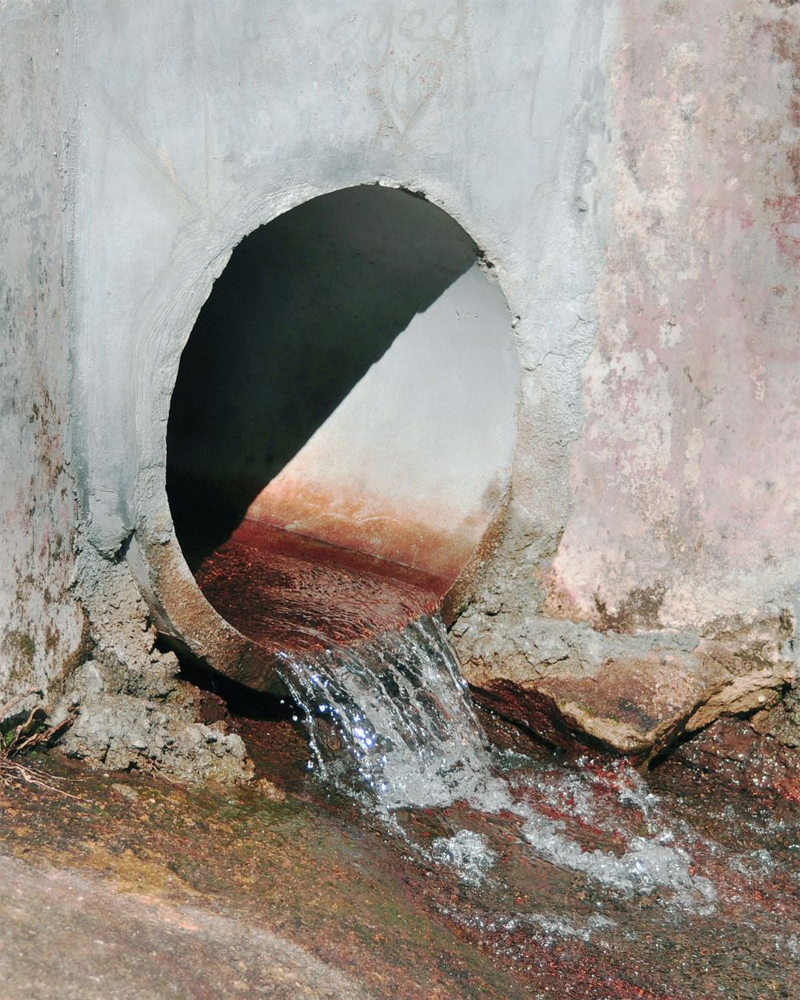
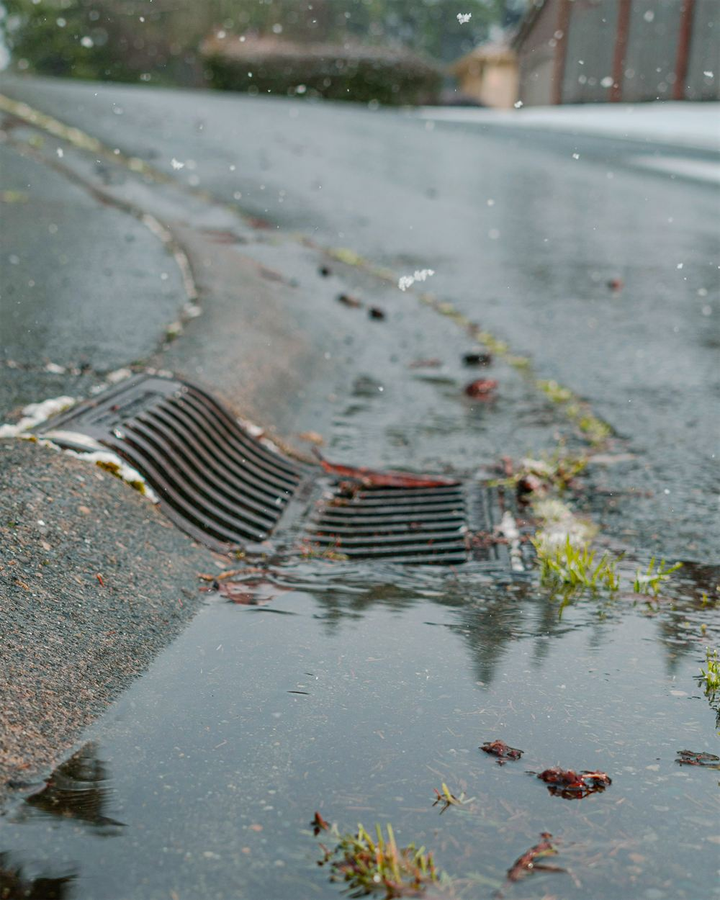
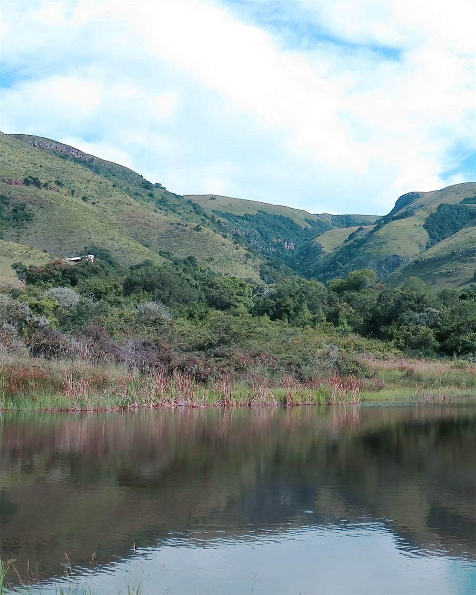
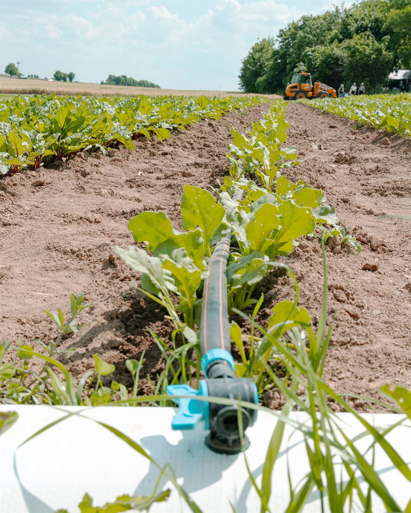

87.4%
of South African households had access to piped or tap water in 2025, in the dwelling, in the yard or at a communal tap.
In 2002, when the survey began, the figure was 84.4%. That is a rise of three percentage points in 23 years.
The provincial divide
Households with access to piped or tap water, by province, 2025. The amber line marks the national figure.
Source: Statistics South Africa, General Household Survey 2025 (P0318), Figure 9.1. Free State, North West and Mpumalanga calculated from Table 9.1.
The infrastructure behind the tap
Dams, pipes, towers and treatment works carry water from source to household.







